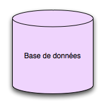
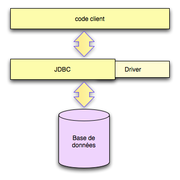
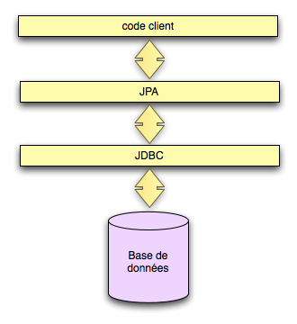
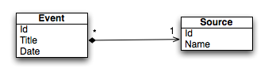

Base de données et persistance
Les bases de données assure la persistance et la longévité des données.
Les propriétés essentielles des bases de données sont regroupées sous l'acronyme ACID :
Les bases de données apportent leur complexité mais c'est souvent un passage obligé.
Il existe différents types de base de données :
les charges grandissantes et la flexibilité recherchée ont poussé certaines de ces solutions hors de la compétition.
Les bases des données orientées documents gagnent en terrain sur le web car elles sont plus adaptée aux modèles de données et aux charges importantes.
Ces bases sont aussi appelées bases NoSQL (mongoDB, cassandra et solr...)
La spécification JDBC date des premières années de java.
Le code client fait appel à une interface uniforme, quelle que soit la base de données.
La couche JDBC fait appel à un driver spécifique à la base de données.
Techniquement c'est une impémentation du pattern bridge.
L'utilisation de JDBC est assez simple.
// chargement du driver Class.forName("com.mysql.jdbc.Driver"); // création d'une connexion String url = "jdbc:mysql://localhost/test"; Connection connection = DriverManager.getConnection(url, "username", "password"); // et une requête Statement statement = connection.createStatement(); ResultSet rs = st.executeQuery("select * from table_name"); while (rs.hasNext()) { ... }
La manipulation du SQL est rapidement verbeuse.
La libération des resources après utilisation et la gestion erreurs n'est pas simple.
Les bases de données relationnelles sont fortement implantées en entreprise.
Mais la connexion entre un modèle objet et une base de données relationnelles pose des problèmes récurrents.
On parle d'un problème d'impédance objet - relationnel.
La spécification JPA (Java Persistance API) définit une norme de compatibilité pour l'implémentation de librairies ORM (Object Relationnal Mapping) en Java.
Voici quelques librairies implémentant JPA :
Hibernate est la plus utilisée.
Ce sont les classes qui représentent notre domain métier et qui doivent être persistées.
public class Event {
private Long id;
private String title;
private Date date;
public Long getId() { return id; }
private void setId(Long id) { this.id = id; }
public Date getDate() { return date; }
public void setDate(Date date) { this.date = date; }
public String getTitle() { return title; }
public void setTitle(String title) { this.title = title; }
}
Ici nous prenons en exemple un évènement simple avec 3 attributs.
Cet exemple est tiré de la documentation hibernate : The first Hibernate Application
La configuration d'hibernate ressemble à la mise en place de JDBC.
Configuration cfg = new Configuration(); // dialect HSQL cfg.setProperty("hibernate.dialect", "org.hibernate.dialect.HSQLDialect"); // driver pour HSQL cfg.setProperty("hibernate.connection.driver_class", "org.hsqldb.jdbcDriver"); // url de connexion cfg.setProperty("hibernate.connection.url", "jdbc:hsqldb:hsql://localhost"); // username et password cfg.setProperty("hibernate.connection.username", "sa"); cfg.setProperty("hibernate.connection.password", ""); // auto création des tables cfg.setProperty("hibernate.hbm2ddl.auto", "update"); SessionFactory sessionFactory = cfg.buildSessionFactory();
Il est aussi possible de configurer hibernate via un fichier xml.
Les annotations sont le moyen le plus simple de paramétrer la persistance.
@Entity
@Table(name = "events")
public class Event {
@Id
@GeneratedValue(strategy = GenerationType.AUTO)
private Long id;
@Column
private String title;
@Column
@Temporal(TemporalType.TIMESTAMP)
private Date date;
...
}
On peut ajouter cette classe dans la configuration.
cfg.addAnnotatedClass(Event.class);
Une fois configuré, hibernate est simple a utiliser.
SessionFactory sessionFactory = ... Session session = sessionFactory.openSession(); // save Event event = new Event(); event.setTitle(title); event.setDate(theDate); session.save(event); // select List events = session.createQuery("from Event").list();
C'est un gain énorme par rapport à l'équivalent JDBC / SQL
Hibernate gère aussi les relations entre les entités.
Imaginons que la classe Event ait une relation vers une classe Source
La classe Event est en partie composée d'une classe Source partagée entre plusieurs évènements.
Avec les annotations, cela se définit comme suit.
public class Event {
@ManyToOne(optional = false)
private Source source
...
}
La référence vers la classe Source doit donc être remplie avant de persister un Event.
Le mapping des associations entre les classes est une chose complexe même avec hibernate.
Il existe 4 cardinalités possibles pour les relations.
Une bonne qualification de la cardinalité permet à hibernate de persister et charger les objets.
Cependant, des relations trop riches complexifient le code client à écrire.
Il y a même un risque de charger beaucoup trop d'objets sans s'en rendre compte car il existe des relations entre les classes.
Pour plus de détails, la documentation de hibernate sur le mapping d'assiociations est beaucoup plus complète.
Hibernate n'est pas une librairie magique qui annihile la complexité.
Elle ne dédouane d'apprendre le SQL, les contraintes des bases de données relationnelles et de faire attention à la performance.
Un autre travers est la mise en place de classes du domain métier ne contenant que des attributs et des getters / setters.
Le terme consacré est un modèle métier anémique, signe d'une mauvaise pratique du design orienté objet.